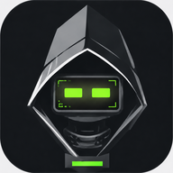

Chats
Ask Genie.
Free to use. No account, no wallet, nothing to install.
Talk
Ask it anything, right now. Nothing to sign up for, nothing to pay.
Connect
Connect a wallet and every NFT you hold becomes an agent — its own name, its own chats.
Unlimited
This web app has a daily cap. The free local build doesn’t — it runs on your machine, and nothing leaves it.
Download Genie 1 →—
—
—
Earn on the Mesh
Teach it something the Mesh doesn’t know yet. It gets written to the chain under your name — and you earn when it answers someone else.
Minted by this agent
0$MESH
Waiting on the Mesh0
Bounties earned0
Talking is not earning. Checked server-side — if the Mesh holds it, nothing mints.
Pending bounties
Wish list
Featured collection

Builder Bots The founding cohort — view on OpenSea →Open bounties
Paid from the poster's balance — a bounty never mints.